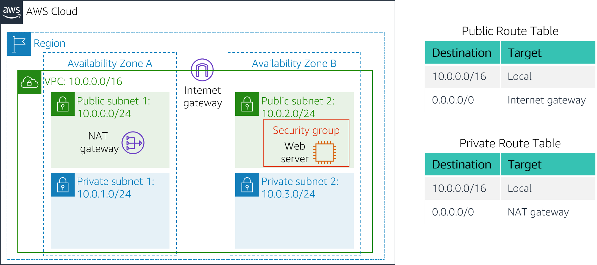

Lab 2: Build your VPC and Launch a Web Server
Lab overview and objectives
In this lab, you will use Amazon Virtual Private Cloud (VPC) to create your own VPC and add additional components to produce a customized network. You will also create security groups for your EC2 instance. You will then configure and customize an EC2 instance to run a web server and launch it into the VPC.
Amazon Virtual Private Cloud (Amazon VPC) enables you to launch Amazon Web Services (AWS) resources into a virtual network that you defined. This virtual network closely resembles a traditional network that you would operate in your own data center, with the benefits of using the scalable infrastructure of AWS. You can create a VPC that spans multiple Availability Zones.
After completing this lab, you should be able to do the following:
Create a VPC.
Create subnets.
Configure a security group.
Launch an EC2 instance into a VPC.
Duration
This lab takes approximately 30 minutes to complete.
AWS service restrictions
In this lab environment, access to AWS services and service actions might be restricted to the ones that are needed to complete the lab instructions. You might encounter errors if you attempt to access other services or perform actions beyond the ones that are described in this lab.
Scenario
In this lab you build the following infrastructure:

Accessing the AWS Management Console
At the top of these instructions, choose Start Lab to launch your lab.
A Start Lab panel opens displaying the lab status.
Wait until you see the message "Lab status: ready", then choose the X to close the Start Lab panel
At the top of these instructions, choose AWS
This will open the AWS Management Console in a new browser tab. The system will automatically log you in.
Tip: If a new browser tab does not open, there will typically be a banner or icon at the top of your browser indicating that your browser is preventing the site from opening pop-up windows. Choose on the banner or icon and choose "Allow pop ups."
Arrange the AWS Management Console tab so that it displays along side these instructions. Ideally, you will be able to see both browser tabs at the same time, to make it easier to follow the lab steps.
Task 1: Create Your VPC
In this task, you will use the VPC Wizard to create a VPC an Internet Gateway and two subnets in a single Availability Zone. An Internet gateway (IGW) is a VPC component that allows communication between instances in your VPC and the Internet.
After creating a VPC, you can add subnets. Each subnet resides entirely within one Availability Zone and cannot span zones. If a subnet's traffic is routed to an Internet Gateway, the subnet is known as a public subnet. If a subnet does not have a route to the Internet gateway, the subnet is known as a private subnet.
The wizard will also create a NAT Gateway, which is used to provide internet connectivity to EC2 instances in the private subnets.
In the search box to the right of Services, search for and choose VPC to open the VPC console.
Choose Launch VPC Wizard
In the left navigation pane, choose VPC with Public and Private Subnets (the second option).
Choose Select then configure:
VPC name:
Lab VPCAvailability Zone: Select the first Availability Zone
Public subnet name:
Public Subnet 1Availability Zone: Select the first Availability Zone (the same as used above)
Private subnet name:
Private Subnet 1Elastic IP Allocation ID: Choose in the box and select the displayed IP address
Choose Create VPC
The wizard will create your VPC.
Once it is complete, choose OK
The wizard has provisioned a VPC with a public subnet and a private subnet in the same Availability Zone, together with route tables for each subnet:

The Public Subnet has a CIDR of 10.0.0.0/24, which means that it contains all IP addresses starting with 10.0.0.x.
The Private Subnet has a CIDR of 10.0.1.0/24, which means that it contains all IP addresses starting with 10.0.1.x.
Task 2: Create Additional Subnets
In this task, you will create two additional subnets in a second Availability Zone. This is useful for creating resources in multiple Availability Zones to provide High Availability.
In the left navigation pane, choose Subnets.
First, you will create a second Public Subnet.
Choose Create subnet then configure:
- VPC ID: Lab VPC (select from the menu).
- Subnet name:
Public Subnet 2 - Availability Zone: Select the second Availability Zone
- IPv4 CIDR block:
10.0.2.0/24
The subnet will have all IP addresses starting with 10.0.2.x.
Choose Create subnet
The second public subnet was created. You will now create a second private subnet.
Choose Create subnet then configure:
- VPC ID:
Lab VPC - Subnet name:
Private Subnet 2 - Availability Zone: Select the second Availability Zone
- CIDR block:
10.0.3.0/24
The subnet will have all IP addresses starting with 10.0.3.x.
- VPC ID:
Choose Create subnet
The second private subnet was created.
You will now configure the Private Subnets to route internet-bound traffic to the NAT Gateway so that resources in the Private Subnet are able to connect to the Internet, while still keeping the resources private. This is done by configuring a Route Table.
A route table contains a set of rules, called routes, that are used to determine where network traffic is directed. Each subnet in a VPC must be associated with a route table; the route table controls routing for the subnet.
In the left navigation pane, choose Route Tables.
Select the route table with Main = Yes and VPC = Lab VPC. (Expand the VPC ID column if necessary to view the VPC name.)
In the Name column for this route table, choose the pencil then type
Private Route Tableand choose SaveIn the lower pane, choose the Routes tab.
Note that Destination 0.0.0.0/0 is set to Target nat-xxxxxxxx. This means that traffic destined for the internet (0.0.0.0/0) will be sent to the NAT Gateway. The NAT Gateway will then forward the traffic to the internet.
This route table is therefore being used to route traffic from Private Subnets.
In the lower pane, choose the Subnet Associations tab.
You will now associate this route table to the Private Subnets.
Choose Edit subnet associations
Select both Private Subnet 1 and Private Subnet 2.
You can expand the Subnet ID column to view the Subnet names.
Choose Save associations
You will now configure the Route Table that is used by the Public Subnets.
Select the route table with Main = No and VPC = Lab VPC (and deselect any other subnets).
In the Name column for this route table, choose the pencil then type
Public Route Table, and choose SaveIn the lower pane, choose the Routes tab.
Note that Destination 0.0.0.0/0 is set to Target igw-xxxxxxxx, which is the Internet Gateway. This means that internet-bound traffic will be sent straight to the internet via the Internet Gateway.
You will now associate this route table to the Public Subnets.
Choose the Subnet associations tab.
Choose Edit subnet associations
Select both Public Subnet 1 and Public Subnet 2.
Choose Save associations
Your VPC now has public and private subnets configured in two Availability Zones:

Task 3: Create a VPC Security Group
In this task, you will create a VPC security group, which acts as a virtual firewall. When you launch an instance, you associate one or more security groups with the instance. You can add rules to each security group that allow traffic to or from its associated instances.
In the left navigation pane, choose Security Groups.
Choose Create security group and then configure:
Security group name:
Web Security GroupDescription:
Enable HTTP accessVPC: Lab VPC
In the Inbound rules pane, choose Add rule
Configure the following settings:
Type: HTTP
Source: Anywhere-IPv4
Description:
Permit web requests
Scroll to the bottom of the page and choose Create security group
You will use this security group in the next task when launching an Amazon EC2 instance.
Task 4: Launch a Web Server Instance
In this task, you will launch an Amazon EC2 instance into the new VPC. You will configure the instance to act as a web server.
In the search box to the right of Services, search for and choose EC2 to open the EC2 console.
Choose Launch instances
Name the instance:
Give it the name
Web Server 1When you name your instance, AWS creates a tag and associates it with the instance. A tag is a key value pair. The key for this pair is *Name*, and the value is the name you enter for your EC2 instance.
Choose an AMI from which to create the instance:
In the list of available Quick Start AMIs, keep the default Amazon Linux AMI selected.
Also keep the default Amazon Linux 2 AMI (HVM) selected.
The type of Amazon Machine Image (AMI) you choose determines the Operating System that will run on the EC2 instance that you launch.
Choose an Instance type:
In the Instance type panel, keep the default t2.micro selected.
The Instance Type defines the hardware resources assigned to the instance.
Select the key pair to associate with the instance:
From the Key pair name menu, select vockey.
The vockey key pair you selected will allow you to connect to this instance via SSH after it has launched. Although you will not need to do that in this lab, it is still required to identify an existing key pair, or create a new one, when you launch an instance.
Configure the Network settings:
Next to Network settings, choose Edit, then configure:
Network: Lab VPC
Subnet: Public Subnet 2 (not Private!)
Auto-assign public IP: Enable
This will ensure that the instance runs in Public Subnet 2 of the VPC that you created earlier in this lab.
Next, you will configure the instance to use the Web Security Group that you created earlier.
Under Firewall (security groups), choose Select an existing security group.
For Common security groups, select Web Security Group.
This security group will permit HTTP access to the instance.
In the Configure storage section, keep the default settings.
Note: The default settings specify that the root volume of the instance, which will host the Amazon Linux 2 guest operating system that you specified earlier, will run on a general purpose SSD (gp2) hard drive that is 8 GiB in size. You could alternatively add more storage volumes, however that is not needed in this lab.
Configure a script to run on the instance when it launches:
Expand the Advanced details panel.
Scroll to the bottom of the page and then copy and paste the code shown below into the User data box:
xxxxxxxxxx# Install Apache Web Server and PHPyum install -y httpd mysql php# Download Lab fileswget https://aws-tc-largeobjects.s3.us-west-2.amazonaws.com/CUR-TF-100-ACCLFO-2/2-lab2-vpc/s3/lab-app.zipunzip lab-app.zip -d /var/www/html/# Turn on web serverchkconfig httpd onservice httpd startThis script will run with root user permissions on the guest OS of the instance. It will run automatically when the instance launches for the first time. The script installs a web server, a database, and PHP libraries, and then it downloads and installs a PHP web application on the web server.
At the bottom of the Summary panel on the right side of the screen choose Launch instance
You will see a Success message.
Choose View all instances
Wait until Web Server 1 shows 2/2 checks passed in the Status check column.
This may take a few minutes. Choose the refresh icon at the top of the page every 30 seconds or so to more quickly become aware of the latest status of the instance.
You will now connect to the web server running on the EC2 instance.
Select Web Server 1.
Copy the Public IPv4 DNS value shown in the Details tab at the bottom of the page.
Open a new web browser tab, paste the Public DNS value and press Enter.
You should see a web page displaying the AWS logo and instance meta-data values.
The complete architecture you deployed is:
Lab Complete
Congratulations! You have completed the lab.
Choose End Lab at the top of this page and then choose Yes to confirm that you want to end the lab.
A panel will appear, indicating that "DELETE has been initiated... You may close this message box now."
Choose the X in the top right corner to close the panel.
© 2022, Amazon Web Services, Inc. and its affiliates. All rights reserved. This work may not be reproduced or redistributed, in whole or in part, without prior written permission from Amazon Web Services, Inc. Commercial copying, lending, or selling is prohibited.